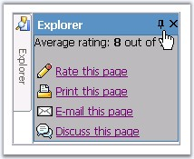

A snap element can be in a minimized position, by default, by setting the IsMinimized property.
|
Property |
Description |
|
IsMinimized |
Specifies to minimize the snap. Default value is false. |
Setting the minimize option for an element
MinimizeElementIDs allows you to specify the element (this can be any html element, image or any container), which when clicked, the snap will be minimized. Here, the id of the 'pin' image (the image pointed in the screenshot) is set to MinimizeElementIDs.
The MinimizeDirectionElementID specifies the id of the element inside which the snap should be minimized. This can be any html element, image or any container. In the screenshot shown below, the id of 'Explorer' image is set to the MinimizeDirectionElementID.
|
Property |
Description |
|
MinimizeDirectionElementID |
Specifies the id of the DOM element, towards which the minimize animation should proceed. |
|
MinimizeElementIDs |
Comma delimited list of object id's to minimize/maximize for this snap control. |

Figure 382: Snap element with Minimize settings
Settings for Minimize action
The duration for the minimize action to take place can be set using the MinimizeDuration property. The speed of the minimize action can be set using MinimizeSlide property.
|
Property |
Description |
|
MinimizeDuration |
Specifies the duration of minimize animation. |
|
MinimizeSlide |
Specifies the slide type to use for the minimize animation. The options included are as follows: · None · Constant · Accelerate · Decelerate |
The aspx page view of the property settings and the code snippets for the various minimize options.
|
<table border="1px" cellpadding="0" cellspacing="0"> <tr> <td valign="top" class="MinimizeContainer" id="MinimizeDiv"> <img id="Image1" src="images/Solution.gif" /> </td> <td valign="top"> <cc1:Snap ID="Snap1" runat="server" MinimizeSlide ="Decelerate" MinimizeDirectionElementID = "Image1" MinimizeElementIDs ="minSnapMinSrc" MinimizeDuration = "600" > <HeaderTemplate> <div style="cursor: move"> <table cellspacing="0" cellpadding="0" width="100%" border="0" > <tr class="SnapHeader"> <td style="width: 100%">Page Options</td> <td style="cursor: hand"> <img id="minSnapMinSrc" src="images/pin.gif" border="0"> </td> </tr> </table> </div> </HeaderTemplate> </cc1:Snap> </td> </tr> </table> |
Programmatically these properties can be set as follows.
|
[C#]
this.Snap1.MinimizeDirectionElementID = "Image1"; this.Snap1.MinimizeElementIDs = "minSnapMinSrc"; this.Snap1.MinimizeSlide = PanelSlideType.Accelerate; this.Snap1.MinimizeDuration = 500; |
|
[VB]
Private Me.Snap1.MinimizeDirectionElementID = "Image1" Private Me.Snap1.MinimizeElementIDs = "minSnapMinSrc" Private Me.Snap1.MinimizeSlide = PanelSlideType.Accelerate Private Me.Snap1.MinimizeDuration = 500 |